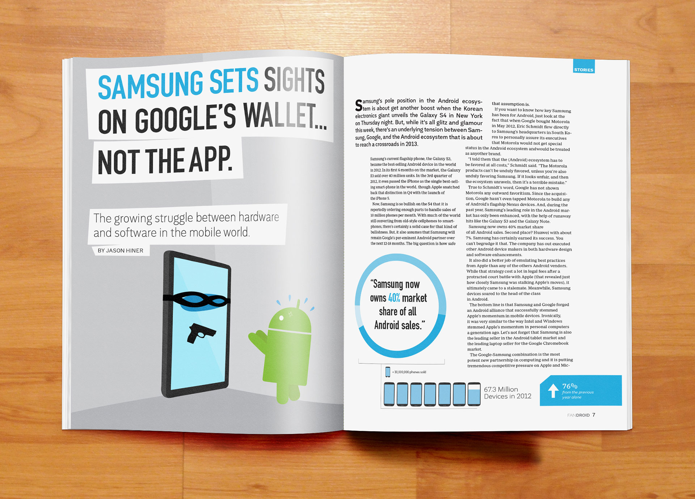
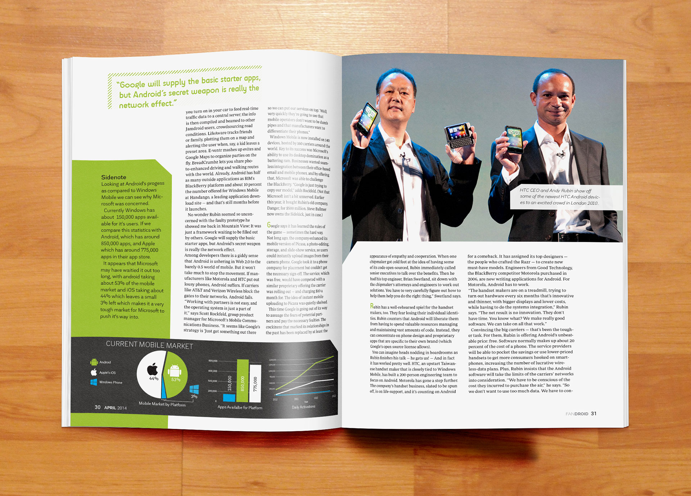
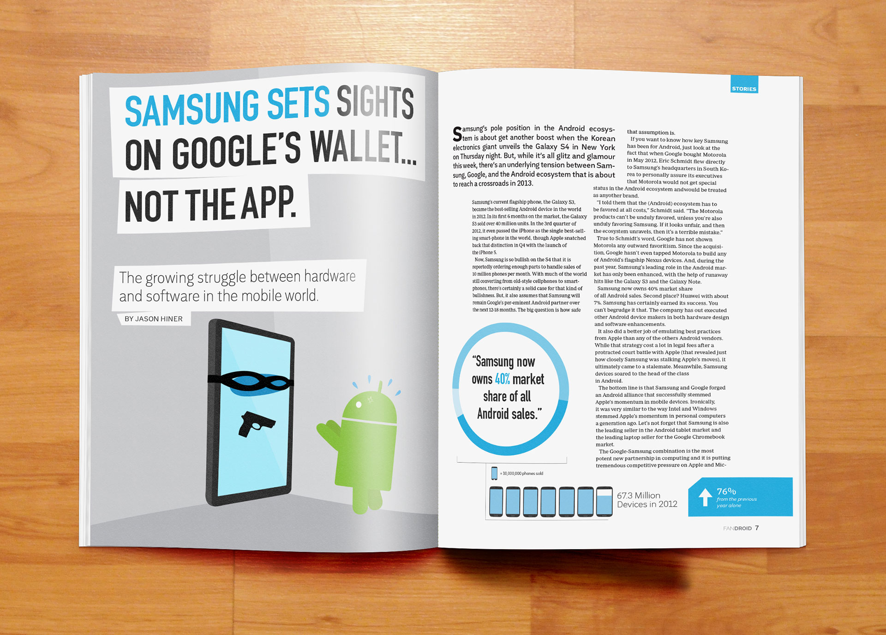
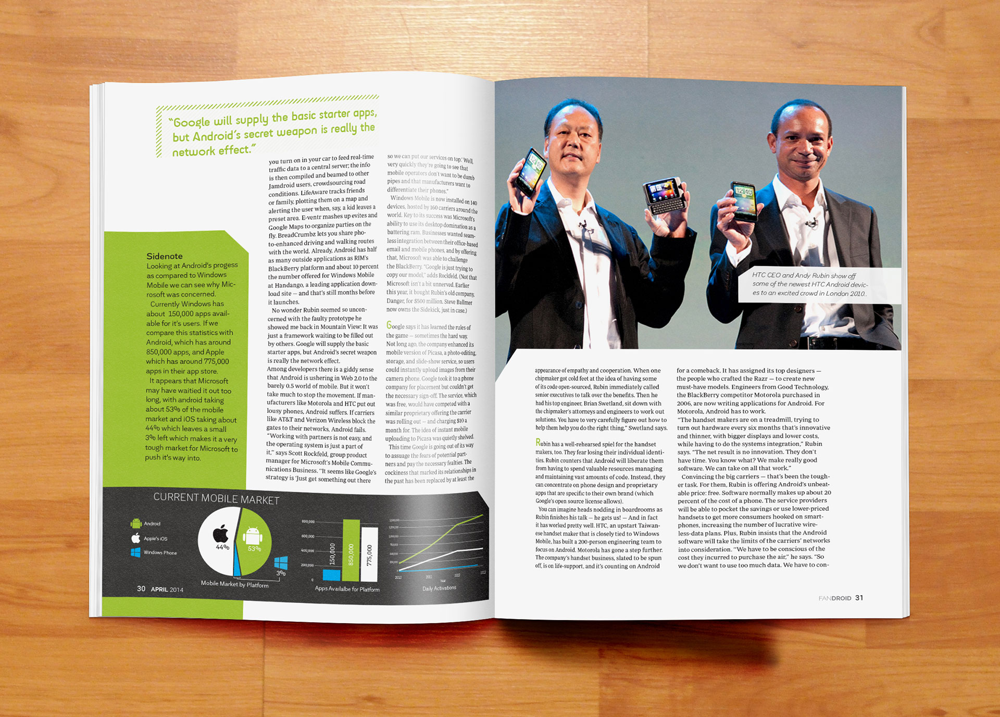

UE:The Basics
A quick guide to getting readers into the hobby of urban exploration. Our guide also provides my personal experiences and tips to how one should approach the online community, which can be tough to navigate as beginner.
Urban exploration is the practice of seeking out new experiences in the modern world, this can be difficult wih how developed our surrounding have become. This new style of exploring takes people into abandoned buildings, storm drains, rooftops and many other locations, I have been participating in this activity for a number of years and felt it was worth sharing. This guide embodies the industrial nature of the hobby with the use of Soho slab serif as the display type and presenting it in a red hue that conjures the feeling of rust or aged paint. The guide also relies heavily on my personal photography to capitvate the viewer so that they too might take up the hobby. While writting the guide I felt that it should be kept short and to the point so as not to deter or confuse readers. I wanted to tie in my own experience as well so that the guide didn’t have a cold tone and as if it were preeching, I also provided things for readers to try while on sight so that they have some ideas for their first outtings.
 


